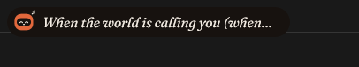

<!doctype html>
<html lang="id">
<head>
<meta charset="utf-8">
<meta name="viewport" content="width=device-width, initial-scale=1">
<title>Brainstorm v3.1</title>
<link rel="preconnect" href="https://fonts.googleapis.com">
<link rel="preconnect" href="https://fonts.gstatic.com" crossorigin>
<link href="https://fonts.googleapis.com/css2?family=Fraunces:ital,opsz,wght@0,9..144,400;0,9..144,600;1,9..144,500&family=DM+Sans:opsz,wght@9..40,400;9..40,500;9..40,600;9..40,700&family=DM+Mono:wght@400;500&family=Plus+Jakarta+Sans:wght@500;600;700&display=swap" rel="stylesheet">
<style>
  :root {
    --paper: #F1ECE4; --ink: #221A14; --ink2: #7A6B5D; --rule: #DDD3C6; --card: #FBF7F1;
    --s: #17120F; --r: #241D18; --rh: #3A2F27; --t: #332A23; --col: #1D1713; --term: #0F0C0A;
    --tx: #F4EDE4; --tx2: #A89A8B; --dot: #4A3E35;
    --a: #E2683C; --ai: #17120F; --sage: #9DB59A; --ochre: #D9A441; --plum: #B07A9A; --red: #FF8A73;
    --body: 'DM Sans', sans-serif; --mono: 'DM Mono', monospace;
    /* header font for every mock-up (the recommended option B) */
    --hf: 'DM Sans', sans-serif; --hw: 600; --hs: normal; --hls: -.02em;
  }
  @page { size: 297mm 210mm; margin: 0; }
  * { box-sizing: border-box; margin: 0; padding: 0; }
  html, body { background: #9a948c; }
  body { font-family: var(--body); color: var(--ink); -webkit-print-color-adjust: exact; print-color-adjust: exact; }
  .page { width: 297mm; height: 210mm; overflow: hidden; position: relative; margin: 0 auto 16px; padding: 30px 40px; background: var(--paper); break-after: page; }
  .page.dark { background: var(--s); color: var(--tx); }
  @media print { html, body { background: none; } .page { margin: 0; } }
  svg { display: block; }
  .folio { position: absolute; left: 40px; right: 40px; bottom: 16px; display: flex; justify-content: space-between; font-size: 9.5px; letter-spacing: .1em; text-transform: uppercase; opacity: .5; }
  .eyebrow { font-size: 10.5px; letter-spacing: .14em; text-transform: uppercase; font-weight: 600; color: var(--ink2); }
  .dark .eyebrow { color: var(--tx2); }
  h1 { font-family: var(--hf); font-weight: 700; font-size: 28px; letter-spacing: -.02em; margin: 2px 0 12px; display: flex; align-items: center; gap: 12px; }
  h1 .no { width: 34px; height: 34px; border-radius: 11px; background: var(--a); color: #FFFBF5; font-size: 16px; display: flex; align-items: center; justify-content: center; flex: none; }
  .lbl { font-size: 10px; letter-spacing: .1em; text-transform: uppercase; font-weight: 600; color: var(--ink2); margin-bottom: 6px; }
  .ux li { list-style: none; position: relative; padding-left: 13px; font-size: 11px; line-height: 1.5; margin-bottom: 4px; color: #3E3229; }
  .ux li::before { content: ""; position: absolute; left: 0; top: 6.5px; width: 5px; height: 5px; border-radius: 50%; background: var(--a); }
  .ux h3 { font-family: var(--hf); font-weight: 700; font-size: 15px; margin-bottom: 6px; letter-spacing: -.01em; }
  code { font-family: var(--mono); font-size: 10px; background: #E8E0D4; padding: 0 4px; border-radius: 4px; }
  .opt { background: var(--card); border: 1px solid var(--rule); border-radius: 14px; padding: 11px 13px; position: relative; }
  .opt.rec { border: 2px solid var(--a); }
  .opt .tag { position: absolute; top: -9px; right: 12px; font-size: 9px; font-weight: 700; letter-spacing: .08em; text-transform: uppercase; background: var(--a); color: #FFFBF5; padding: 2px 8px; border-radius: 99px; }
  .opt b { font-size: 12.5px; display: block; margin-bottom: 3px; }
  .opt p { font-size: 10.8px; line-height: 1.45; color: #4A3D33; }
  .opt .pc { font-size: 10px; color: var(--ink2); margin-top: 5px; line-height: 1.4; }
  .grid3 { display: grid; grid-template-columns: repeat(3, 1fr); gap: 12px; }
  .grid2 { display: grid; grid-template-columns: 1fr 1fr; gap: 14px; }

  /* screens */
  .scr { border-radius: 14px; position: relative; overflow: hidden; background: linear-gradient(115deg, #6B4A36 0%, #A97B57 50%, #E0C4A0 100%); }
  .scr.alt { background: linear-gradient(115deg, #2F3B36 0%, #5E7A6C 55%, #B9C8B5 100%); }
  .scr.gray { background: linear-gradient(115deg, #3a3a3a, #6b6b6b); }
  .nt { position: absolute; top: 10px; left: 50%; transform: translateX(-50%); background: var(--s); color: var(--tx); border-radius: 999px; display: flex; align-items: center; gap: 8px; padding: 0 16px 0 6px; height: 34px; white-space: nowrap; box-shadow: 0 8px 20px rgba(0,0,0,.3); font-size: 12px; overflow: hidden; }
  .nt.big { height: auto; min-height: 60px; border-radius: 24px; padding: 10px 12px; gap: 10px; align-items: center; }
  .nt .t1 { font-size: 12.5px; font-weight: 600; }
  .nt .t2 { font-size: 10.5px; color: var(--tx2); }
  .lyr { font-family: var(--hf); font-weight: 600; font-size: 13px; letter-spacing: -.005em; }
  .fade { -webkit-mask-image: linear-gradient(90deg, #000 85%, transparent); mask-image: linear-gradient(90deg, #000 85%, transparent); overflow: hidden; }
  .act { font-size: 10.5px; padding: 5px 11px; border-radius: 99px; background: var(--r); color: var(--tx); white-space: nowrap; }
  .act.pri { background: var(--a); color: var(--ai); font-weight: 600; }
  .act.dng { background: rgba(255,138,115,.14); color: var(--red); }
  .ruler { position: absolute; top: 50px; height: 14px; border-left: 1px solid rgba(255,255,255,.7); border-right: 1px solid rgba(255,255,255,.7); font-size: 9px; color: #fff; display: flex; align-items: center; justify-content: center; }
  .ruler::before { content: ""; position: absolute; left: 0; right: 0; top: 7px; border-top: 1px dashed rgba(255,255,255,.7); }
  .ruler span { background: rgba(0,0,0,.45); padding: 0 5px; border-radius: 4px; position: relative; }

  /* panel */
  .panel { width: 560px; height: 290px; background: var(--s); color: var(--tx); border-radius: 0 0 30px 30px; position: relative; padding: 16px 20px 28px; box-shadow: 0 14px 30px rgba(34,26,20,.22); overflow: hidden; }
  .ph { display: flex; align-items: center; justify-content: space-between; height: 28px; margin-bottom: 10px; gap: 8px; }
  .ttl { font-family: var(--hf); font-weight: var(--hw); font-style: var(--hs); letter-spacing: var(--hls); font-size: 20px; white-space: nowrap; }
  .hchip { font-size: 10.5px; padding: 3px 9px; border-radius: 99px; background: var(--r); color: var(--tx2); white-space: nowrap; display: inline-flex; align-items: center; gap: 5px; }
  .hchip.mono { font-family: var(--mono); }
  .hchip.acc { background: rgba(226,104,60,.15); color: var(--a); }
  .hchip.sage { background: rgba(157,181,154,.15); color: var(--sage); }
  .hchip svg { width: 12px; height: 12px; }
  .dots { position: absolute; bottom: 10px; left: 0; right: 0; display: flex; justify-content: center; gap: 6px; }
  .dots i { width: 5px; height: 5px; border-radius: 50%; background: var(--dot); display: block; }
  .dots i.on { background: var(--a); }
  .term { background: var(--term); border-radius: 16px; height: 214px; position: relative; font-family: var(--mono); font-size: 11px; line-height: 1.62; color: #E6DED3; overflow: hidden; }
  .term .out { padding: 10px 14px 0; height: 170px; display: flex; flex-direction: column; justify-content: flex-end; }
  .term .p { color: var(--a); } .term .m { color: var(--tx2); } .term .g { color: var(--sage); }
  .term .inp { position: absolute; left: 0; right: 0; bottom: 0; height: 44px; display: flex; align-items: center; gap: 8px; padding: 0 14px; border-top: 1px solid #221B16; }
  .caret { display: inline-block; width: 7px; height: 14px; background: var(--a); vertical-align: -3px; }
  .menu { position: absolute; right: 54px; top: 44px; width: 300px; background: #241D18; border: 1px solid #332A23; border-radius: 14px; padding: 6px; box-shadow: 0 14px 30px rgba(0,0,0,.45); z-index: 2; font-size: 11px; }
  .menu .hd { font-size: 9px; letter-spacing: .12em; text-transform: uppercase; color: var(--tx2); padding: 6px 8px 4px; }
  .menu div.it { display: flex; align-items: center; gap: 8px; padding: 6px 8px; border-radius: 8px; }
  .menu div.it.on { background: rgba(226,104,60,.16); }
  .menu div.it span { font-family: var(--mono); font-size: 10.5px; flex: 1; white-space: nowrap; overflow: hidden; text-overflow: ellipsis; }
  .menu div.it small { font-size: 9.5px; color: var(--tx2); white-space: nowrap; }
  .menu svg { width: 13px; height: 13px; color: var(--tx2); flex: none; }

  /* system page */
  .sys { display: grid; grid-template-columns: 170px 1fr; gap: 18px; height: 222px; }
  .ringw { position: relative; width: 150px; height: 150px; margin: 4px auto 0; }
  .ringw .c { position: absolute; inset: 0; display: flex; flex-direction: column; align-items: center; justify-content: center; }
  .ringw b { font-size: 30px; font-weight: 600; letter-spacing: -.02em; font-variant-numeric: tabular-nums; }
  .ringw small { font-size: 10px; color: var(--tx2); letter-spacing: .1em; text-transform: uppercase; }
  .spark { margin-top: 10px; }
  .meter { margin-bottom: 11px; }
  .meter .hd { display: flex; justify-content: space-between; font-size: 11.5px; margin-bottom: 5px; }
  .meter .hd b { font-weight: 600; }
  .meter .hd span { color: var(--tx2); font-variant-numeric: tabular-nums; font-size: 11px; }
  .bar { height: 7px; border-radius: 7px; background: var(--t); overflow: hidden; }
  .bar i { display: block; height: 100%; border-radius: 7px; }
  .warn { color: var(--ochre) !important; }
  .procs { display: grid; grid-template-columns: 1fr auto auto; gap: 3px 12px; font-size: 10.5px; margin-top: 4px; }
  .procs span:nth-child(3n+2), .procs span:nth-child(3n) { color: var(--tx2); text-align: right; font-variant-numeric: tabular-nums; }
  .cbtn { display: inline-flex; align-items: center; gap: 6px; font-size: 11px; padding: 6px 12px; border-radius: 99px; background: var(--a); color: var(--ai); font-weight: 600; }
  .cbtn.ghost { background: var(--r); color: var(--tx); font-weight: 500; }
  .cbtn svg { width: 13px; height: 13px; }

  /* cleanup list */
  .cl { display: grid; gap: 1px; }
  .cl .row { display: grid; grid-template-columns: 18px 22px 1fr auto; align-items: center; gap: 9px; padding: 3px 8px; border-radius: 10px; font-size: 11.5px; }
  .cl .row:nth-child(odd) { background: rgba(244,237,228,.03); }
  .cl .row small { display: block; color: var(--tx2); font-size: 9.5px; }
  .cl .row .csz { font-variant-numeric: tabular-nums; color: var(--tx); font-weight: 600; font-size: 11.5px; }
  .ck { width: 16px; height: 16px; border-radius: 5px; border: 1.5px solid var(--tx2); display: flex; align-items: center; justify-content: center; }
  .ck.on { background: var(--a); border-color: var(--a); }
  .ck.on::after { content: ""; width: 7px; height: 4px; border-left: 2px solid #17120F; border-bottom: 2px solid #17120F; transform: rotate(-45deg) translate(1px, -1px); }
  .cl .ic { color: var(--tx2); }
  .cl .ic svg { width: 17px; height: 17px; }
  .lock { font-size: 9px; padding: 1px 6px; border-radius: 99px; background: rgba(217,164,65,.15); color: var(--ochre); margin-left: 6px; }

  /* clipboard */
  .search { display: flex; align-items: center; gap: 8px; background: var(--r); border-radius: 12px; padding: 7px 11px; font-size: 11.5px; color: var(--tx2); flex: 1; }
  .search svg { width: 14px; height: 14px; }
  .clips { display: grid; grid-template-columns: 1fr 1fr; gap: 7px; margin-top: 9px; }
  .clip { background: var(--r); border-radius: 13px; padding: 8px 10px; height: 64px; position: relative; overflow: hidden; font-size: 11px; display: flex; flex-direction: column; }
  .clip .k { font-size: 9px; letter-spacing: .1em; text-transform: uppercase; color: var(--tx2); display: flex; align-items: center; gap: 5px; margin-bottom: 3px; }
  .clip .k svg { width: 11px; height: 11px; }
  .clip .v { line-height: 1.35; overflow: hidden; display: -webkit-box; -webkit-line-clamp: 2; -webkit-box-orient: vertical; }
  .clip.sel { box-shadow: inset 0 0 0 1.5px var(--a); }
  .clip .pin { position: absolute; right: 8px; top: 7px; color: var(--a); }
  .clip .pin svg { width: 12px; height: 12px; }
  .clip.img { padding: 0; flex-direction: row; }
  .clip.img .th { width: 92px; height: 100%; background: linear-gradient(160deg, #E2683C, #5A2A1C); flex: none; position: relative; }
  .clip.img .th::after { content: ""; position: absolute; left: 14px; right: 14px; top: 14px; bottom: 14px; border: 1.5px solid rgba(244,237,228,.55); border-radius: 4px; }
  .clip.img .meta { padding: 8px 10px; }
  .sw { width: 18px; height: 18px; border-radius: 6px; display: inline-block; vertical-align: -4px; margin-right: 6px; }

  /* screenshot preview */
  .shot { width: 170px; height: 100px; border-radius: 12px; flex: none; position: relative; overflow: hidden;
          background: linear-gradient(180deg, #2B221C 0 18%, #F4EEE6 18% 100%); border: 1px solid #3A2F27; }
  .shot::before { content: ""; position: absolute; left: 10px; top: 26px; width: 70px; height: 8px; border-radius: 3px; background: #C9542B; }
  .shot::after { content: ""; position: absolute; left: 10px; top: 42px; right: 14px; height: 46px; border-radius: 6px; background: repeating-linear-gradient(180deg, #E6DCCF 0 6px, transparent 6px 12px); }
  .shot.lg { width: 230px; height: 136px; }

  .robot { flex: none; }
  .note { font-size: 10.5px; color: var(--ink2); margin-top: 5px; line-height: 1.45; }
  table { width: 100%; border-collapse: collapse; font-size: 10.8px; }
  th, td { text-align: left; padding: 6px 8px; border-bottom: 1px solid var(--rule); vertical-align: top; line-height: 1.45; }
  th { font-size: 9px; letter-spacing: .1em; text-transform: uppercase; color: var(--ink2); font-weight: 600; }
  .sz { font-size: 9.5px; padding: 2px 8px; border-radius: 99px; background: #E6DCCF; white-space: nowrap; }
  .sz.l { background: rgba(226,104,60,.18); color: #A8431F; }
</style>
</head>
<body>
<div id="doc"></div>
<script>
const P = (d, w = 1.6) => `<svg viewBox="0 0 24 24" fill="none" stroke="currentColor" stroke-width="${w}" stroke-linecap="round" stroke-linejoin="round">${d}</svg>`;
const I = {
  folder: P('<path d="M3 7a1 1 0 0 1 1-1h5l2 2h9a1 1 0 0 1 1 1v9a1 1 0 0 1-1 1H4a1 1 0 0 1-1-1z"/>'),
  star: P('<path d="M12 4l2.4 5 5.4.6-4 3.7 1.1 5.3L12 16l-4.9 2.6 1.1-5.3-4-3.7 5.4-.6z"/>'),
  clock: P('<circle cx="12" cy="12" r="8.5"/><path d="M12 7.5V12l3 2"/>'),
  search: P('<circle cx="11" cy="11" r="6"/><path d="M16 16l4 4"/>'),
  pin: P('<path d="M9 4h6l-1 6 3 3H7l3-3zM12 13v7"/>'),
  link: P('<path d="M10 14a4 4 0 0 0 5.7 0l3-3a4 4 0 0 0-5.7-5.7l-1.2 1.2M14 10a4 4 0 0 0-5.7 0l-3 3a4 4 0 0 0 5.7 5.7l1.2-1.2"/>'),
  text: P('<path d="M5 6h14M5 11h14M5 16h9"/>'),
  code: P('<path d="M9 8l-4 4 4 4M15 8l4 4-4 4"/>'),
  image: P('<rect x="3" y="5" width="18" height="14" rx="3"/><circle cx="9" cy="10" r="1.6"/><path d="M21 16l-5-5-8 8"/>'),
  color: P('<circle cx="12" cy="12" r="8.5"/><path d="M12 3.5v17"/>'),
  trash: P('<path d="M4.5 7h15M9.5 7V4.5h5V7M6.5 7l1 13h9l1-13z"/>'),
  temp: P('<path d="M7 4h7l4 4v12H7z"/><path d="M14 4v4h4"/>'),
  globe: P('<circle cx="12" cy="12" r="8.5"/><path d="M3.5 12h17M12 3.5c3 3.3 3 13.7 0 17M12 3.5c-3 3.3-3 13.7 0 17"/>'),
  box: P('<path d="M4 8l8-4 8 4v8l-8 4-8-4z"/><path d="M4 8l8 4 8-4M12 12v8"/>'),
  win: P('<rect x="4" y="4" width="7" height="7" rx="1"/><rect x="13" y="4" width="7" height="7" rx="1"/><rect x="4" y="13" width="7" height="7" rx="1"/><rect x="13" y="13" width="7" height="7" rx="1"/>'),
  dl: P('<path d="M12 4v11M7.5 10.5L12 15l4.5-4.5M5 19h14"/>'),
  img2: P('<rect x="3" y="5" width="18" height="14" rx="3"/><path d="M8 12l2.5 2.5L16 9"/>'),
  sparkle: P('<path d="M12 4l1.8 6.2L20 12l-6.2 1.8L12 20l-1.8-6.2L4 12l6.2-1.8z"/>'),
  copy: P('<rect x="8" y="8" width="11" height="11" rx="2.5"/><path d="M16 8V6a1 1 0 0 0-1-1H6a1 1 0 0 0-1 1v9a1 1 0 0 0 1 1h2"/>'),
  save: P('<path d="M12 4v11M7.5 10.5L12 15l4.5-4.5M5 19h14"/>'),
  edit: P('<path d="M4 20h4l11-11-4-4L4 16z"/>'),
  check: P('<path d="M5 12.5l4.5 4.5L19 7.5"/>', 2),
};

function robot(expr = 'idle', size = 26) {
  const T = '#E2683C', D = '#17120F', C = '#F4EDE4', L = 24.5, R = 39.5, Y = 32;
  const eye = (x, y, w, h, r) => `<rect x="${x - w / 2}" y="${y - h / 2}" width="${w}" height="${h}" rx="${r}" fill="${C}"/>`;
  const line = (d, w = 2.6) => `<path d="${d}" fill="none" stroke="${C}" stroke-width="${w}" stroke-linecap="round" stroke-linejoin="round"/>`;
  const happy = line(`M${L - 4} ${Y + 2}q4-6 8 0M${R - 4} ${Y + 2}q4-6 8 0`);
  const note = `<path d="M57 9v-8l5-1.5v8" fill="none" stroke="${C}" stroke-width="1.6" stroke-linecap="round"/><circle cx="55.4" cy="9" r="1.9" fill="${C}"/><circle cx="60.4" cy="7.5" r="1.9" fill="${C}"/>`;
  const E = {
    idle: eye(L, Y, 6, 9, 3) + eye(R, Y, 6, 9, 3), happy,
    sing: happy + `<ellipse cx="32" cy="${Y + 6.5}" rx="2.6" ry="2" fill="${C}"/>` + note,
    alert: `<circle cx="${L}" cy="${Y}" r="4.6" fill="${C}"/><circle cx="${R}" cy="${Y}" r="4.6" fill="${C}"/>`,
    think: eye(L + 2.5, Y - 2.5, 5.5, 7.5, 2.75) + eye(R + 2.5, Y - 2.5, 5.5, 7.5, 2.75),
    sad: eye(L, Y + 2.5, 6, 5, 2.5) + eye(R, Y + 2.5, 6, 5, 2.5) + line(`M${L - 4} ${Y - 2}l7-2M${R + 4} ${Y - 2}l-7-2`, 1.8),
  }[expr];
  return `<svg class="robot" width="${size}" height="${size}" viewBox="0 0 64 64" style="overflow:visible"><rect x="6" y="9" width="52" height="46" rx="18" fill="${T}"/><rect x="12" y="21" width="40" height="22" rx="11" fill="${D}"/>${E}</svg>`;
}
const ring = (p, size, sw, color = 'var(--a)') => { const r = (size - sw) / 2 - 1, c = 2 * Math.PI * r;
  return `<svg width="${size}" height="${size}" viewBox="0 0 ${size} ${size}" style="transform:rotate(-90deg)"><circle cx="${size / 2}" cy="${size / 2}" r="${r}" fill="none" stroke="var(--t)" stroke-width="${sw}"/><circle cx="${size / 2}" cy="${size / 2}" r="${r}" fill="none" stroke="${color}" stroke-width="${sw}" stroke-linecap="round" stroke-dasharray="${c * p} ${c}"/></svg>`; };
const dots = (on, n = 9) => `<div class="dots">${Array.from({ length: n }, (_, i) => `<i class="${i === on ? 'on' : ''}"></i>`).join('')}</div>`;
const folio = (r) => `<div class="folio"><span>Dynamic Island · Brainstorm v3.1</span><span>${r}</span></div>`;
const ux = (t, items) => `<div class="ux">${t ? `<h3>${t}</h3>` : ''}<ul>${items.map(i => `<li>${i}</li>`).join('')}</ul></div>`;
const opt = (k, t, p, pc, rec) => `<div class="opt${rec ? ' rec' : ''}">${rec ? '<span class="tag">Saran</span>' : ''}<b>${k} · ${t}</b><p>${p}</p>${pc ? `<div class="pc">${pc}</div>` : ''}</div>`;

// ================= cover =================
const IDEAS = [
  ['Lirik tidak terpotong', 'Notch melebar mengikuti panjang baris lirik.'],
  ['CLI ikut folder terakhir', 'Terminal langsung berada di folder yang terakhir kamu buka.'],
  ['Judul tanpa italic', 'Tiga pilihan font judul yang tegak.'],
  ['Sistem: monitor & bersih-bersih', 'CPU, RAM, sisa disk, dan deep cleanup ala Mole.'],
  ['Clipboard sendiri', 'Riwayat clipboard di panel, bukan Win+V.'],
  ['Screenshot dengan preview', 'Pratinjau di notch: salin, simpan, atau hapus.'],
];
const cover = `<section class="page dark" style="display:flex;flex-direction:column;justify-content:space-between">
  <div class="eyebrow">Dynamic Island · setelah v3.0 Studio</div>
  <div style="display:flex;align-items:center;gap:30px">${robot('happy', 120)}
    <div><div style="font-family:var(--hf);font-weight:700;font-size:58px;letter-spacing:-.03em;line-height:1">Brainstorm v3.1</div>
      <div style="color:var(--tx2);font-size:15px;margin-top:12px;max-width:560px;line-height:1.5">Enam ide berikutnya, masing-masing dengan beberapa pilihan dan saran. Belum ada kode yang diubah; pilih dulu, lalu kita jadikan rencana.</div></div></div>
  <div style="display:grid;grid-template-columns:repeat(3,1fr);gap:12px;margin-bottom:24px">${IDEAS.map(([t, d], i) => `<div style="background:var(--r);border-radius:14px;padding:12px 14px;display:flex;gap:11px">
    <span style="width:26px;height:26px;border-radius:9px;background:var(--a);color:#17120F;font-weight:700;font-size:12px;display:flex;align-items:center;justify-content:center;flex:none">${i + 1}</span>
    <div><div style="font-weight:600;font-size:13px">${t}</div><div style="font-size:11px;color:var(--tx2);margin-top:2px;line-height:1.4">${d}</div></div></div>`).join('')}</div>
  ${folio('27 Oktober 2026').replace('class="folio"', 'class="folio" style="color:var(--tx)"')}</section>`;

// ================= 1 lyrics =================
const LYR = [
  ['Baris pendek', 'tanpa kata', 220],
  ['Baris sedang', 'di antara gedung dan cahaya sore', 320],
  ['Baris panjang', 'kita berjalan pulang lewat jalan yang sama setiap hari', 470],
];
const lyrStrip = (label, text, w, extra = '') => `<div><div class="lbl">${label}</div><div class="scr" style="height:66px">
  <div class="nt" style="width:${w}px;justify-content:flex-start;transition:none">${robot('sing', 24)}<span class="lyr${extra}">${text}</span></div></div></div>`;
const p1 = `<section class="page"><div class="eyebrow">Ide 1</div><h1><span class="no">1</span>Lirik tidak terpotong</h1>
  <div style="display:grid;grid-template-columns:420px 1fr;gap:24px">
    <div><div class="lbl">Sekarang</div>
      <p class="note">Notch lirik dipatok 300 × 34 px (<code>ShapeKind::MediaLyric</code> di <code>geometry.rs</code>), jadi baris yang lebih panjang terpotong "…".</p>
      <div class="lbl" style="margin-top:14px">Pilihan</div>
      <div style="display:grid;gap:12px">
        ${opt('A', 'Melebar mengikuti baris', 'Lebar = panjang teks + robot + padding, antara 220 dan 560 px. Berubah halus (180 ms) tiap ganti baris. Kalau masih lebih panjang dari 560, teks bergeser pelan setelah jeda 1 detik.', 'Paling natural; satu baris tetap rapi.', true)}
        ${opt('B', 'Dua baris', 'Lebar tetap 300 px, tinggi naik jadi 52 px untuk baris panjang.', 'Notch jadi lebih tinggi dan menutup lebih banyak layar.')}
        ${opt('C', 'Huruf mengecil', 'Ukuran huruf turun sampai 10 px supaya muat.', 'Sulit dibaca, terutama di layar besar.')}
      </div></div>
    <div><div class="lbl">Usulan A · lebar mengikuti baris</div>
      <div style="display:grid;gap:10px">${LYR.map(([l, t, w]) => lyrStrip(l, t, w)).join('')}
        <div><div class="lbl">Lebih dari 560 px · bergeser</div><div class="scr alt" style="height:80px">
          <div class="nt" style="width:560px;justify-content:flex-start">${robot('sing', 24)}<span class="lyr fade" style="flex:1"><span style="margin-left:-60px;display:inline-block">dan semua lampu kota menyala satu per satu ketika kita akhirnya sampai di rumah</span></span></div>
          <div class="ruler" style="left:calc(50% - 280px);width:560px;top:52px"><span>maks. 560 px · teks bergeser, ujung memudar</span></div></div></div>
      </div>
      ${ux('Detail', ['Lebar dihitung dari layout DirectWrite baris yang sedang tampil.', 'Supaya tidak "goyang", notch tidak menyusut untuk baris yang hanya sedikit lebih pendek (selisih &lt; 40 px).', 'Baris instrumental "♪" memakai lebar minimum.', 'Batas 560 px bisa diganti jadi persentase layar di layar kecil.'])}
    </div></div>
  ${folio('Lirik')}</section>`;

// ================= 2 CLI folder =================
const cliPanel = (o) => `<div class="panel">
  <div class="ph"><span class="ttl">CLI</span><div style="display:flex;gap:6px;align-items:center">${o.chips}</div></div>
  <div class="term"><div class="out">${o.out}</div><div class="inp"><span class="p" style="color:var(--a)">›</span><span style="flex:1"><span class="caret"></span></span><span style="font-family:var(--body);font-size:9.5px;color:#6E6155">Enter jalankan · ↑ riwayat · Esc keluar</span></div></div>
  ${o.menu || ''}${dots(7)}</div>`;
const p2 = `<section class="page"><div class="eyebrow">Ide 2</div><h1><span class="no">2</span>CLI ikut folder yang terakhir kamu buka</h1>
  <div style="display:grid;grid-template-columns:560px 1fr;gap:24px">
    <div><div class="lbl">Saat halaman CLI dibuka · folder dari Explorer</div>
      ${cliPanel({ chips: `<span class="hchip acc">${I.folder}dari Explorer</span><span class="hchip mono">D:\\github\\project-a</span><span class="hchip">PowerShell</span>`,
        out: `<div><span class="p">›</span> git status</div><div class="m">On branch main · nothing to commit</div><div class="m" style="margin-top:6px;border-top:1px dashed #2A221C;padding-top:6px">↳ pindah ke D:\\github\\project-a (folder Explorer terakhir)</div>` })}
      <div class="lbl" style="margin-top:14px">Klik chip folder · pilih tujuan</div>
      ${cliPanel({ chips: `<span class="hchip mono">D:\\github\\project-a</span><span class="hchip">PowerShell</span>`, out: `<div class="m">…</div>`,
        menu: `<div class="menu"><div class="hd">Jendela Explorer terbuka</div>
          <div class="it on">${I.folder}<span>D:\\github\\project-a</span><small>aktif terakhir</small></div>
          <div class="it">${I.folder}<span>D:\\Proyek\\rumah-kemang\\gambar</span><small>2 mnt lalu</small></div>
          <div class="hd">Favorit</div><div class="it">${I.star}<span>D:\\github\\dynamic-island</span><small></small></div>
          <div class="hd">Terakhir dipakai di CLI</div><div class="it">${I.clock}<span>C:\\Users\\hartono</span><small>kemarin</small></div></div>` })}
    </div>
    <div style="display:grid;gap:12px;align-content:start">
      ${opt('A', 'Ikuti jendela Explorer terakhir', 'Saat halaman CLI dibuka dan tidak ada perintah berjalan, CLI pindah ke folder jendela File Explorer yang terakhir aktif. Dibaca lewat daftar jendela Shell Windows (IShellWindows).', 'Persis "folder yang terakhir aku buka". Tidak berlaku untuk folder di VS Code.', true)}
      ${opt('B', 'Ikuti aplikasi di depan', 'Ambil folder dari aplikasi yang aktif sebelum panel dibuka: Explorer, Windows Terminal, atau VS Code (dari judul jendela).', 'Lebih luas, tapi VS Code dan terminal tidak selalu menyebut folder lengkapnya, jadi kadang meleset.')}
      ${opt('C', 'Manual: favorit & riwayat folder', 'Folder tidak pindah sendiri; klik chip folder untuk memilih dari Explorer terbuka, favorit, atau riwayat.', 'Paling bisa ditebak, tapi kamu tetap harus memilih.')}
      ${ux('Usulan: A + menu dari C', [
        'Pindah otomatis hanya kalau tidak ada perintah berjalan; tidak pernah di tengah perintah.',
        'Chip "dari Explorer" dan satu baris info di output, supaya kamu tahu kenapa foldernya berubah.',
        'Kalau tidak ada Explorer terbuka: tetap folder terakhir (<code>cli-cwd.txt</code>, seperti sekarang).',
        'Pengaturan → Umum: "Folder awal CLI" = Ikuti Explorer / Folder terakhir.'])}
    </div></div>
  ${folio('CLI')}</section>`;

// ================= 3 fonts =================
const FONTS = [
  ['A', 'Fraunces tegak', "'Fraunces', serif", 600, '-.01em', 'Font yang sama, tanpa miring. Karakter Studio tetap ada.', 'Butuh file Fraunces Roman tambahan (± 60 KB).', false],
  ['B', 'DM Sans Semibold', "'DM Sans', sans-serif", 700, '-.025em', 'Satu keluarga dengan teks isi. Paling bersih dan minimalis.', 'Tidak ada font baru; exe sedikit lebih kecil.', true],
  ['C', 'Plus Jakarta Sans', "'Plus Jakarta Sans', sans-serif", 700, '-.02em', 'Sans modern buatan Tokotype, terinspirasi Jakarta. Lebih tegas.', 'Satu font baru (± 50 KB); dua sans berdampingan.', false],
];
const fontCard = ([k, n, f, w, ls, d, pc, rec]) => `<div class="opt${rec ? ' rec' : ''}" style="padding:0;overflow:hidden">${rec ? '<span class="tag" style="top:auto;bottom:10px">Saran</span>' : ''}
  <div style="background:var(--s);color:var(--tx);padding:16px 18px 14px;font-family:${f};font-weight:${w};letter-spacing:${ls}">
    <div style="display:flex;justify-content:space-between;align-items:center"><span style="font-size:21px">Oktober 2026</span>
      <span style="background:var(--s);border:1px solid var(--t);border-radius:99px;padding:3px 12px 3px 4px;display:flex;align-items:center;gap:6px;font-size:14px">${robot('idle', 20)}14:32</span></div>
    <div style="font-size:29px;margin:12px 0 2px;line-height:1.05">Senja di Kemang</div>
    <div style="font-family:var(--body);font-weight:400;letter-spacing:0;font-size:12px;color:var(--tx2)">Studio Ruang · 1:42 / 3:58</div>
    <div style="display:flex;gap:10px;align-items:baseline;margin-top:12px"><span style="font-size:44px;line-height:1;font-variant-numeric:tabular-nums">18:42</span><span style="font-family:var(--body);font-size:10px;letter-spacing:.14em;color:var(--a);font-weight:600">FOKUS</span></div></div>
  <div style="background:#F4EEE6;padding:12px 18px;font-family:${f};font-weight:${w};letter-spacing:${ls};font-size:20px">Tampilan <span style="font-family:var(--body);font-weight:400;font-size:11px;letter-spacing:0;color:var(--ink2);margin-left:6px">judul Pengaturan</span></div>
  <div style="padding:10px 14px 12px"><b>${k} · ${n}</b><p>${d}</p><div class="pc">${pc}</div></div></div>`;
const p3 = `<section class="page"><div class="eyebrow">Ide 3</div><h1><span class="no">3</span>Judul tanpa italic</h1>
  <p style="font-size:11.5px;color:var(--ink2);margin:-6px 0 14px;max-width:820px">Semua yang sekarang Fraunces Italic: judul halaman panel, judul lagu, jam besar Pomodoro, jam di notch, judul Pengaturan dan editor. Teks isi tetap DM Sans, CLI tetap DM Mono. Mockup di dokumen ini sudah memakai pilihan B.</p>
  <div class="grid3">${FONTS.map(fontCard).join('')}</div>
  ${folio('Font judul')}</section>`;

// ================= 4a system monitor =================
const spark = (pts, color) => { const w = 150, h = 34, max = 100; const d = pts.map((v, i) => `${i ? 'L' : 'M'}${(i / (pts.length - 1)) * w} ${h - (v / max) * h}`).join(' ');
  return `<svg width="${w}" height="${h}" viewBox="0 0 ${w} ${h}"><path d="${d} L${w} ${h} L0 ${h}Z" fill="${color}" fill-opacity=".14"/><path d="${d}" fill="none" stroke="${color}" stroke-width="1.6" stroke-linejoin="round"/></svg>`; };
const meter = (name, val, p, color, warn) => `<div class="meter"><div class="hd"><b>${name}</b><span class="${warn ? 'warn' : ''}">${val}</span></div><div class="bar"><i style="width:${p}%;background:${color}"></i></div></div>`;
const sysPanel = `<div class="panel">
  <div class="ph"><span class="ttl">Sistem</span><div style="display:flex;gap:6px"><span class="hchip">Uptime 6 j 1 m</span><span class="cbtn">${I.sparkle}Bersihkan</span></div></div>
  <div class="sys"><div><div class="ringw">${ring(0.33, 150, 11)}<div class="c"><b>33%</b><small>CPU · 8 inti</small></div></div>
      <div class="spark" style="display:flex;justify-content:center">${spark([22, 30, 25, 41, 38, 52, 35, 28, 33, 47, 31, 33], '#E2683C')}</div></div>
    <div>${meter('RAM', '14,2 / 31,8 GB · 44%', 44, 'var(--sage)')}
      ${meter('Disk C:', 'sisa 8,4 GB dari 237 GB', 96, 'var(--ochre)', true)}
      ${meter('Disk D:', 'sisa 312 GB dari 931 GB', 66, 'var(--tx2)')}
      <div class="lbl" style="color:var(--tx2);margin:10px 0 4px">Paling sibuk</div>
      <div class="procs"><span>Chrome</span><span>12%</span><span>3,1 GB</span><span>Code</span><span>7%</span><span>1,4 GB</span><span>AutoCAD</span><span>5%</span><span>2,2 GB</span></div></div></div>
  ${dots(6)}</div>`;
const p4 = `<section class="page"><div class="eyebrow">Ide 4 · bagian 1</div><h1><span class="no">4</span>Sistem: pantau CPU, RAM dan disk</h1>
  <div style="display:grid;grid-template-columns:560px 1fr;gap:24px">
    <div><div class="lbl">Halaman panel baru "Sistem"</div>${sysPanel}
      <div class="lbl" style="margin-top:14px">Peringatan di notch</div>
      <div class="scr" style="height:78px"><div class="nt big" style="top:9px">${robot('sad', 38)}<div><div class="t1">Disk C: tinggal 8,4 GB</div><div class="t2">Bersihkan sekarang bisa membebaskan ± 6 GB</div></div><span class="act pri">Bersihkan</span></div></div>
      <p class="note">Muncul sekali saat melewati batas (default: disk &lt; 10 GB atau RAM &gt; 90% selama 1 menit), seperti peringatan baterai.</p></div>
    <div style="display:grid;gap:12px;align-content:start">
      ${opt('A', 'Ukur sendiri di island', 'CPU dari <code>GetSystemTimes</code>, RAM dari <code>GlobalMemoryStatusEx</code>, disk dari <code>GetDiskFreeSpaceExW</code>, proses teratas dari snapshot proses. Diperbarui tiap 2 detik, hanya saat halaman Sistem terlihat.', 'Ringan, tanpa program lain, dan tidak bergantung Mole.', true)}
      ${opt('B', 'Pakai Mole <code>mo status</code>', 'Mole Windows sudah terpasang di PC ini, tapi <code>status</code> hanya tampilan interaktif tanpa JSON, jadi island tidak bisa membacanya.', 'Tidak praktis untuk dibaca island.')}
      ${ux('Detail', [
        'Halaman ke-7 di panel (lihat urutan di halaman terakhir).',
        'Disk yang hampir penuh diwarnai oker; angka pakai angka tabular.',
        'Klik disk membuka Explorer di drive itu; klik proses membuka Task Manager.',
        'Tidak ada redraw saat panel tertutup (sama seperti progress musik).'])}
    </div></div>
  ${folio('Sistem · monitor')}</section>`;

// ================= 4b cleanup =================
const CL = [
  ['temp', 'File sementara', 'Temp pengguna & Windows', '3,2 GB', true],
  ['globe', 'Cache browser', 'Chrome, Edge (saat browser tertutup)', '1,8 GB', true],
  ['box', 'Cache developer', 'npm, pip, NuGet, Gradle', '2,4 GB', true],
  ['win', 'Sisa Windows Update', 'Perlu izin admin', '1,1 GB', false, true],
  ['dl', 'Installer di Downloads', '.exe/.msi lebih dari 30 hari', '0,9 GB', false],
  ['trash', 'Recycle Bin', 'Dihapus permanen', '0,6 GB', false],
];
const cleanPanel = `<div class="panel">
  <div class="ph"><span class="ttl">Bersihkan</span><div style="display:flex;gap:6px;align-items:center"><span class="hchip sage">Bisa dibebaskan 7,4 GB</span><span class="cbtn">Bersihkan 7,4 GB</span></div></div>
  <div class="cl">${CL.map(([ic, t, s, sz, on, adm]) => `<div class="row"><span class="ck${on ? ' on' : ''}"></span><span class="ic">${I[ic]}</span><div>${t}${adm ? '<span class="lock">admin</span>' : ''}<small>${s}</small></div><span class="csz">${sz}</span></div>`).join('')}</div>
  ${dots(6)}</div>`;
const p5 = `<section class="page"><div class="eyebrow">Ide 4 · bagian 2</div><h1><span class="no">4</span>Deep cleanup</h1>
  <div style="display:grid;grid-template-columns:560px 1fr;gap:24px">
    <div><div class="lbl">Hasil pindai · pilih lalu bersihkan</div>${cleanPanel}
      <div class="lbl" style="margin-top:14px">Selesai</div>
      <div class="scr alt" style="height:78px"><div class="nt big" style="top:9px">${robot('happy', 38)}<div><div class="t1">7,4 GB dibebaskan</div><div class="t2">Disk C: sekarang sisa 15,8 GB</div></div><span class="act">Detail</span></div></div></div>
    <div style="display:grid;gap:12px;align-content:start">
      ${opt('A', 'Pembersih sendiri, kategori aman', 'Island memindai lokasi yang dikenal aman, menampilkan ukuran per kategori, dan hanya menghapus yang kamu centang. Kategori berisiko (Recycle Bin, Downloads) tidak dicentang dari awal.', 'Kendali penuh, tampilan menyatu dengan island.', true)}
      ${opt('B', 'Jalankan Mole di halaman CLI', 'Tombol "Bersihkan dengan Mole" menjalankan <code>mo clean --dry-run</code> lalu <code>mo clean</code> di halaman CLI.', 'Mole Windows masih eksperimental ("not mature" menurut README-nya) dan interaktif; CLI island tidak bisa menjawab prompt.')}
      ${opt('C', 'Gabungan', 'A sebagai bawaan, plus tombol kecil "Buka Mole" kalau <code>mo</code> terpasang, untuk fitur lain (uninstall, analyze).', 'Fleksibel, tapi dua cara untuk hal yang mirip.')}
      ${ux('Aturan keamanan', [
        'Selalu pindai dulu dan tampilkan ukuran; tidak ada hapus tanpa konfirmasi.',
        'File yang sedang dipakai dilewati, tidak dipaksa.',
        'Langkah admin (Windows Update) meminta izin terpisah lewat UAC.',
        'Catatan: Mole Windows berlisensi MIT, jadi ide dan daftar lokasinya boleh dijadikan acuan; kode macOS-nya GPL dan tidak disalin.'])}
    </div></div>
  ${folio('Sistem · bersihkan')}</section>`;

// ================= 5 clipboard =================
const CLIPS = [
  ['text', 'Teks', 'Denah lantai 2 sudah saya revisi, tolong dicek bagian tangga', true, false],
  ['link', 'Tautan', 'github.com/tw93/mole/tree/windows', false, false],
  ['img', 'Gambar', 'Screenshot · 1920 × 1080', false, true],
  ['code', 'Kode', 'cargo test --locked -- --nocapture', false, false],
  ['color', 'Warna', '<span class="sw" style="background:#E2683C"></span>#E2683C', false, false],
  ['text', 'Teks', 'Jl. Kemang Raya No. 12, Jakarta Selatan', false, false],
];
const clipPanel = `<div class="panel">
  <div class="ph"><span class="ttl">Clipboard</span><div class="search" style="max-width:250px">${I.search}Cari di 48 item…</div></div>
  <div class="clips">${CLIPS.map(([ic, k, v, pin, img], i) => img
    ? `<div class="clip img"><div class="th"></div><div class="meta"><div class="k">${I.image}${k}</div><div class="v">${v}</div><div style="font-size:9.5px;color:var(--tx2);margin-top:2px">2 mnt lalu</div></div></div>`
    : `<div class="clip${i === 0 ? ' sel' : ''}">${pin ? `<span class="pin">${I.pin}</span>` : ''}<div class="k">${I[ic]}${k}</div><div class="v"${ic === 'code' || ic === 'link' ? ' style="font-family:var(--mono);font-size:10.5px"' : ''}>${v}</div></div>`).join('')}</div>
  ${dots(5)}</div>`;
const p6 = `<section class="page"><div class="eyebrow">Ide 5</div><h1><span class="no">5</span>Clipboard sendiri</h1>
  <div style="display:grid;grid-template-columns:560px 1fr;gap:24px">
    <div><div class="lbl">Halaman panel "Clipboard"</div>${clipPanel}
      <div class="lbl" style="margin-top:14px">Saat menyalin · umpan balik singkat</div>
      <div class="scr" style="height:58px"><div class="nt">${robot('happy', 24)}<span style="font-weight:600">Disalin</span><span style="color:var(--tx2);max-width:220px;overflow:hidden;text-overflow:ellipsis">Denah lantai 2 sudah saya revisi…</span></div></div></div>
    <div style="display:grid;gap:12px;align-content:start">
      ${ux('Cara kerja', [
        'Island mendengar perubahan clipboard (<code>AddClipboardFormatListener</code>) dan menyimpan 50 item terakhir.',
        'Jenis dikenali otomatis: teks, tautan, kode, warna hex, gambar (thumbnail), file.',
        'Klik kartu = salin lagi; klik kanan / tombol: sematkan, hapus, tempel sebagai teks biasa.',
        'Ketik untuk mencari; ↑↓ memilih, Enter menyalin dan menutup panel.',
        'Pintasan opsional (mis. <kbd>Ctrl+Shift+V</kbd>) membuka panel langsung di halaman ini.'])}
      ${ux('Privasi', [
        'Isi dari password manager dilewati (format "exclude from history" yang dipakai 1Password, Bitwarden, dll.).',
        'Hanya di komputer ini; disimpan terenkripsi DPAPI seperti token Google, atau hanya di memori (pilihan).',
        'Pengaturan: aktif/mati, jumlah item, hapus saat layar dikunci, abaikan aplikasi tertentu.'])}
      ${opt('?', 'Pertanyaan', 'Tombol Clipboard di Shortcuts: buka halaman ini (saran) atau tetap Win+V?', '')}
    </div></div>
  ${folio('Clipboard')}</section>`;

// ================= 6 screenshot =================
const p7 = `<section class="page"><div class="eyebrow">Ide 6</div><h1><span class="no">6</span>Screenshot dengan preview di notch</h1>
  <div style="display:grid;grid-template-columns:560px 1fr;gap:24px">
    <div><div class="lbl">Setelah mengambil screenshot</div>
      <div class="scr alt" style="height:190px"><div class="nt big" style="top:10px;padding:10px;gap:12px;align-items:stretch;border-radius:26px">
        <div class="shot lg"></div>
        <div style="display:flex;flex-direction:column;justify-content:space-between;min-width:178px">
          <div style="display:flex;gap:8px;align-items:center">${robot('happy', 26)}<div><div class="t1">Screenshot</div><div class="t2">1280 × 720 · sudah disalin</div></div></div>
          <div style="display:grid;gap:6px">
            <span class="act" style="display:flex;gap:6px;align-items:center"><span style="width:13px">${I.copy}</span>Salin lagi</span>
            <span class="act pri" style="display:flex;gap:6px;align-items:center"><span style="width:13px">${I.save}</span>Simpan</span>
            <span class="act dng" style="display:flex;gap:6px;align-items:center"><span style="width:13px">${I.trash}</span>Hapus</span></div></div></div></div>
      <p class="note">Klik gambar = buka di Snipping Tool untuk diedit. Hilang sendiri setelah 8 detik tanpa aksi (sesuai pilihan "jika diabaikan").</p>
      <div class="lbl" style="margin-top:12px">Setelah aksi</div>
      <div style="display:grid;grid-template-columns:1fr 1fr;gap:10px">
        <div class="scr" style="height:56px"><div class="nt">${robot('happy', 24)}<span style="font-weight:600">Disimpan</span><span style="color:var(--tx2)">Pictures\\Screenshots</span></div></div>
        <div class="scr" style="height:56px"><div class="nt">${robot('idle', 24)}<span style="font-weight:600">Dihapus</span><span style="color:var(--tx2)">clipboard dikosongkan</span></div></div></div></div>
    <div style="display:grid;gap:12px;align-content:start">
      ${opt('A', 'Pakai alat potong Windows, preview di island', 'Tombol Screenshot tetap membuka <code>ms-screenclip:</code>. Begitu gambar baru masuk clipboard (dan file di Pictures\\Screenshots), island menampilkan preview dengan Salin / Simpan / Hapus.', 'Pilih area, jendela, layar penuh tetap dari Windows. Kerja paling sedikit.', true)}
      ${opt('B', 'Alat potong sendiri', 'Island menggambar overlay pemilih area sendiri, lalu preview yang sama.', 'Bisa lebih menyatu (mis. langsung kirim ke notch), tapi jauh lebih banyak kerja dan harus mengurus multi-monitor & DPI.')}
      ${ux('Detail', [
        '<b>Simpan</b>: biarkan file di Pictures\\Screenshots (atau folder pilihan).',
        '<b>Hapus</b>: hapus file itu dan kosongkan clipboard kalau isinya masih gambar yang sama.',
        'Juga berlaku untuk tombol PrtSc dan Win+Shift+S, bukan hanya tombol di Shortcuts.',
        'Screenshot ikut masuk riwayat Clipboard (ide 5) sebagai kartu gambar.',
        'Pengaturan: "Jika diabaikan" = Simpan / Hapus; lama tampil 8 detik.'])}
    </div></div>
  ${folio('Screenshot')}</section>`;

// ================= summary =================
const PAGES = ['Kalender', 'Pomodoro', 'Pengingat', 'Catatan', 'Musik', 'Clipboard', 'Sistem', 'CLI', 'Shortcuts'];
const p8 = `<section class="page"><div class="eyebrow">Ringkasan</div><h1>Pilihan, urutan halaman, dan yang perlu kamu putuskan</h1>
  <div style="display:grid;grid-template-columns:1.35fr 1fr;gap:24px">
    <div><table><tr><th>#</th><th>Ide</th><th>Saran</th><th>Ukuran</th></tr>
      <tr><td>1</td><td>Lirik tidak terpotong</td><td>A · notch melebar 220–560 px, bergeser kalau lebih</td><td><span class="sz">kecil</span></td></tr>
      <tr><td>2</td><td>CLI ikut folder</td><td>A · ikuti Explorer terakhir + menu folder</td><td><span class="sz">sedang</span></td></tr>
      <tr><td>3</td><td>Judul tanpa italic</td><td>B · DM Sans Semibold</td><td><span class="sz">kecil</span></td></tr>
      <tr><td>4</td><td>Sistem: monitor</td><td>A · ukur sendiri, halaman "Sistem"</td><td><span class="sz">sedang</span></td></tr>
      <tr><td>4</td><td>Sistem: bersihkan</td><td>A · pembersih sendiri, kategori aman</td><td><span class="sz l">besar</span></td></tr>
      <tr><td>5</td><td>Clipboard sendiri</td><td>Halaman "Clipboard", 50 item, privasi aman</td><td><span class="sz l">besar</span></td></tr>
      <tr><td>6</td><td>Screenshot + preview</td><td>A · alat potong Windows, preview di notch</td><td><span class="sz">sedang</span></td></tr></table>
      <div class="lbl" style="margin-top:16px">Urutan halaman panel (7 → 9)</div>
      <div style="display:flex;gap:6px;flex-wrap:wrap">${PAGES.map((p, i) => `<span style="font-size:11px;padding:5px 11px;border-radius:99px;${['Clipboard', 'Sistem'].includes(p) ? 'background:var(--a);color:#FFFBF5;font-weight:600' : 'background:#E6DCCF'}">${i + 1}. ${p}</span>`).join('')}</div>
      <p class="note">Sembilan halaman cukup banyak untuk digulir. Usul tambahan: Pengaturan → Tampilan → "Halaman panel" untuk menyembunyikan atau mengurutkan halaman.</p></div>
    <div>${ux('Pertanyaan untukmu', [
      '<b>Font judul</b>: A, B, atau C? Jam besar ikut font judul juga?',
      '<b>CLI</b>: cukup ikut Explorer (A), atau juga VS Code/Terminal (B)?',
      '<b>Bersihkan</b>: pembersih sendiri (A), Mole (B), atau gabungan (C)? Kategori mana yang boleh?',
      '<b>Clipboard</b>: disimpan antar restart (terenkripsi) atau hanya di memori? Pintasan keyboard yang mana?',
      '<b>Screenshot</b>: kalau diabaikan, simpan atau hapus?',
      '<b>Halaman</b>: perlu pengaturan untuk menyembunyikan halaman?'])}
      <div class="opt" style="margin-top:12px"><b>Setelah kamu memilih</b><p>Pilihan dijadikan rencana v3.1 (seperti rencana v3), lalu dikerjakan per run lewat workflow <strong>build</strong>.</p></div></div>
  </div>${folio('Ringkasan')}</section>`;

document.getElementById('doc').innerHTML = cover + p1 + p2 + p3 + p4 + p5 + p6 + p7 + p8;

const only = /^#p(\d+)$/.exec(location.hash);
if (only) {
  document.querySelectorAll('.page').forEach((p, i) => { if (i + 1 !== +only[1]) p.remove(); else p.style.margin = '0'; });
  document.body.style.background = 'none';
}
</script>
</body>
</html>
